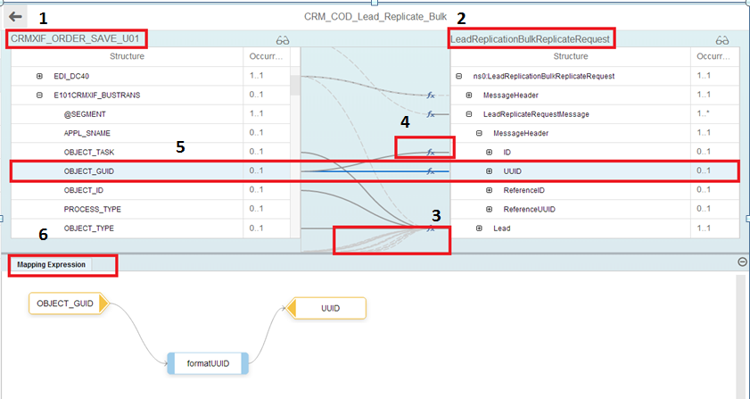

You use this procedure to view mapping details of mappings appearing in an integration flow.
To familiarize yourself with the various features and behavior of elements in the mapping viewer, see the screenshot below:
| Sections marked in above screenshot | Description |
|---|---|
| 1 | Represents the source structure. |
| 2 | Represents the target structure. |
| 3 | If any of the entities (source or target) are not visible, a dotted line indicates the calculated position of the invisible entity. |
| 4 | Solid lines represent visible source and target entities. |
| 5 | If you select a line, both source and target entities come to the center in the table, and the line becomes solid. |
| 6 | This section represents the functions of the selected mapping. |